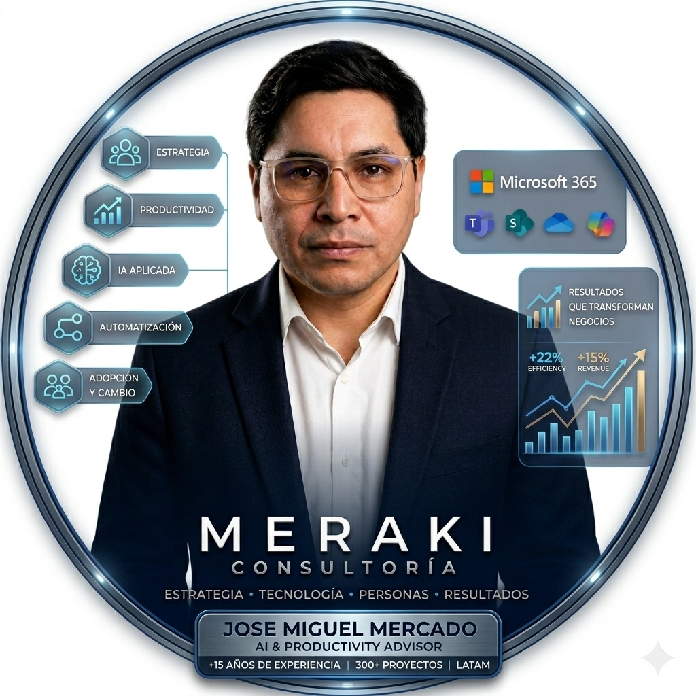

Transformamos tecnología en resultados medibles.
Consultoría estratégica de alto nivel para acelerar la evolución digital de organizaciones mediante inteligencia aplicada, automatización inteligente y productividad de alto rendimiento.
¿Su organización está frenada por la brecha de productividad?
La adopción tecnológica sin dirección estratégica no genera evolución, solo complejidad. Identifique los cuellos de botella clave que limitan el crecimiento de su negocio.
El Ruido de la IA
Herramientas adoptadas por moda u opiniones de terceros, sin una hoja de ruta clara ni un análisis riguroso de retorno de inversión sobre el negocio.
Subutilización de Licencias
Inversión costosa en suites como Microsoft 365 que los equipos utilizan al 15% de su capacidad real, ignorando las herramientas nativas de optimización.
Fricción Operativa
Procesos manuales y repetitivos que consumen valiosas horas de talento calificado, limitando la escalabilidad del negocio y desmotivando al equipo.
Baja Adopción Real
Plataformas de última generación implementadas que terminan en desuso porque no se diseñó un proceso enfocado en la cultura y la gestión del cambio.
Especialización Estratégica con Propósito
Líneas de servicio diseñadas para generar impacto real e inmediato en la productividad ejecutiva y la solidez tecnológica de su organización.
Estrategia Digital
Auditorías y hojas de ruta de transformación digital a medida de los objetivos de negocio de la dirección general.
Conocer soluciónProductividad Empresarial
Ingeniería de flujos de trabajo orientada a eliminar redundancias operativas y liberar horas de alto valor.
Explorar servicioIA Aplicada al Negocio
Integración con propósito de inteligencia artificial generativa y modelos predictivos enfocados en el negocio.
Hablar con especialistaOptimización Microsoft 365
Aprovechamiento integral de herramientas existentes: Power Automate, SharePoint, Copilot y automatizaciones nativas.
Conocer solucionesAutomatización Inteligente
Diseño de flujos automatizados de extremo a extremo que conectan sus aplicaciones críticas para erradicar errores.
Explorar solucionesAdopción y Cultura Digital
Programas ejecutivos y dinámicos para garantizar que sus equipos integren e internalicen la tecnología en su día a día.
Hablar con Jose MiguelNuestra Metodología de Impacto
Un proceso consultivo e iterativo enfocado de manera directa en erradicar la fricción y maximizar el rendimiento.
Diagnóstico Estratégico
Auditar en detalle el estado tecnológico de la empresa y detectar las ineficiencias más graves en la operación diaria. Evaluamos el uso de sus herramientas actuales, la calidad de sus datos y la madurez tecnológica de su equipo humano.
- Mapeo rápido de cuellos de botella clave.
- Evaluación exhaustiva de licencias tecnológicas actuales (M365, software, etc.).
- Informe de viabilidad de optimización e IA.
Diseño de la Estrategia
Creamos la arquitectura técnica y la hoja de ruta estratégica para su implementación. No elegimos herramientas por moda; seleccionamos las tecnologías óptimas que mejor se alinean con sus KPI y objetivos comerciales a mediano y largo plazo.
- Definición de tecnologías, automatizaciones e IA recomendadas.
- Diseño de flujos de trabajo optimizados (Flujogramas detallados).
- Estructuración de KPIs claros y medibles de éxito operativo.
Implementación Ágil
Desarrollamos e integramos las soluciones aprobadas. Conectamos bases de datos, programamos automatizaciones y desplegamos modelos de IA con altos estándares de seguridad corporativa y óptima velocidad de procesamiento.
- Programación avanzada de automatizaciones en Power Platform u otras APIs.
- Integración controlada de modelos de lenguaje en procesos corporativos.
- Pruebas de estrés y validación de seguridad de datos.
Adopción Acelerada
La tecnología es tan buena como el uso que se le dé. Entrenamos a sus líderes y equipos mediante metodologías ágiles de capacitación, garantizando que el uso de las nuevas herramientas de automatización e IA se convierta en una rutina diaria y natural.
- Sesiones prácticas y personalizadas de capacitación.
- Creación de guías interactivas y documentación de soporte ágil.
- Monitoreo inicial de adopción para realizar ajustes proactivos.
Resultados de Impacto
Validamos que el impacto estratégico se corresponda con las metas iniciales. Medimos la reducción de tiempos de proceso, el ahorro financiero, la satisfacción del equipo y la precisión del nuevo ecosistema tecnológico.
- Presentación formal de métricas de retorno de inversión (ROI).
- Análisis comparativo de productividad antes vs después.
- Definición de pautas para la evolución continua de la organización.

Jose Miguel Mercado
AI & Productivity Advisor · Fundador de MERAKI Consultoría
Acompaño a organizaciones en Latinoamérica a transformar tecnología en resultados concretos, conectando estrategia, productividad e innovación con las verdaderas necesidades del negocio.
Desde MERAKI Consultoría, trabajo junto a líderes y equipos para identificar oportunidades, optimizar procesos e implementar soluciones que generen eficiencia, adopción tecnológica y crecimiento sostenible.
Mi enfoque no se trata solo de implementar herramientas, sino de asegurar que la tecnología aporte valor real, simplifique la operación y potencie a las personas.
Resultados de Impacto Comprobable
Nuestra eficacia no se basa en promesas teóricas, sino en números medibles que transforman la estructura de costos y tiempos de nuestros clientes.
Proyectos Optimizados
Implementados con éxito para elevar la eficiencia operativa y tecnológica de las organizaciones.
Tasa de Adopción
De las herramientas y soluciones de IA integradas activamente por los equipos de trabajo.
Horas Ahorradas
Liberadas anualmente en tareas administrativas y repetitivas redirigidas a trabajo de alto valor.
Eficiencia en Procesos
Reducción de tiempos de ejecución y optimización de flujos operativos en departamentos clave.
Acelere la Evolución Digital de su Organización
Agende una sesión de diagnóstico estratégico de 45 minutos (valorada en $350 USD) 100% gratuita. Analizaremos sus procesos actuales y le daremos 3 recomendaciones directas de impacto inmediato.
Solicitud de Diagnóstico Recibida
Gracias por tu interés, . Jose Miguel Mercado o un miembro sénior de MERAKI Consultoría revisará tu caso personalmente y te contactará a en las próximas 12 horas hábiles para coordinar la sesión.